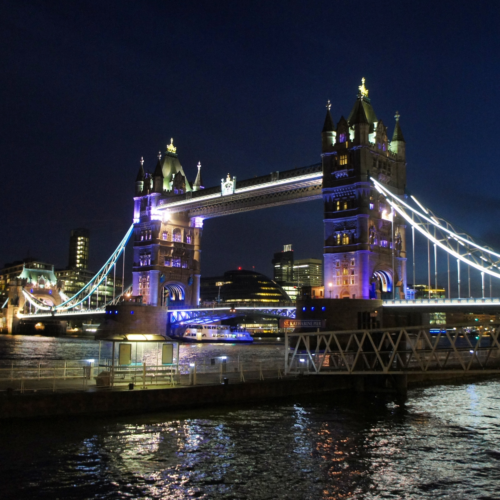

Moving to the UK
Updated 8th November 2015
Rhi's Australian Expat Guide
I found that there is a lot of guides out there on the internet to help you move over here, but a lot are out of date. Application processes, types of bank accounts available etc. can change quickly, so I thought a newer guide might be helpful. Feel free to message me with any questions at all. I’m always happy to help :) Also if people can let me know if anything that doesn’t make sense to them/anything missing/anything that has changed since I did the move, I will then edit this guide to make it easier for everyone.

Before Leaving...
● (For health professionals only) HCPC Registration:this is before anything else, as it takes up to 6 months to register.
Go to http://www.hpc-uk.org/apply/ for the latest info. One
question I commonly get asked is about the Regulatory Body and Professional Body Membership sections of the application
- which is which? I put AHPRA down as the Regulatory Body, and the AIR as a professional body membership. I don’t
know for sure if this is right, but it worked for me. Feel free to msg me with any questions :) Content
● Permission to work here: There is three main options - the two year visa, the ancestry visa (if you have a
grandparent born in the UK) and the British passport (if yourself or a parent was born in the UK). Go to https://www.gov.uk/apply-uk-visa for all the latest info. Visas only take a month or two from application.
● Job agencies: I think signing up with two is a good idea. Set it all up before leaving the UK, I would recommend
two/three months beforehand. For radiographers, message me your email address and I can get mine to send you details
etc. There is a lot of paperwork involved for radiographer agencies so this is why it’s important to apply two/three
months beforehand. For example, there is vaccination checks, a criminal record check (they don’t accept the Australian
version) and online courses, as well as a one-day course on arrival.
● Consider what type of work you want. I don’t think I will ever take a permanent position here - money and lifestyle
freedom are much better with locuming/contracting/freelancing. Contracting work is popular here, in many different
professions - I know people here that are contracting in media, IT, design and healthcare, and all enjoy the increased
income and freedom over permanent work. Permanent pay is worse here than in Australia (at least for radiographers),
even though it costs more to live here. For radiographers, they are very short on us at the moment so you will
get offered permanent work quickly and often, so my advice to you is don’t take it, not yet at least.
● Accountancy firm (for locums, contractors etc): you can save a lot on tax if you operate as an Umbrella company
or LTD company here. Having an umbrella company is the easier option, but you may choose to go LTD for even greater
tax savings. I went the umbrella route, and am just changing to LTD now - it’s a lot of paperwork. Once again,
message me directly with your email address and I can get my accountancy firm to send you details (I’m quite happy
with their service). Setting up an umbrella company doesn’t take much time before you leave.
● Proof of Address: get your Australian banks/credit card companies/whoever to send you a statement to your UK
address before you leave, ideally to have them there waiting for you on your arrival. Change your address online
with all your Australian financial institutions as soon as you know your UK address, and change it to receiving
your statements as frequently as possible - I was able to change mine to monthly statements. The more often you
can get official documents to generate with your proof of address on it, the better. You may change address frequently
(like I did) and come to realise you need proof of address a lot in the UK. Your address doesn’t need to be that
permanent, even if it’s just the place you are staying for the first couple of days on arrival into the UK - this
is what I did.
● Accessing money: before you have earnt any pounds, make sure you have a good (fee-free) way to access your
Aussie dollars - the UK is expensive enough as it is. I like the 28 Degrees Credit Card (http://www.28degreescard.com.au/)
- they have no international transaction fees. Better still, you can deposit money into the credit account so that
you are using the card as a debit card rather than a credit card. This way you avoid any nasty cash advance fees.
I still use my Australian card - i think it is much better to leave your savings in an Australian bank account
rather than transferring to a UK account as interest rates are currently much better in Oz and also you will waste
money on transfer fees.
● Railcards: you can apply before leaving the UK (http://www.railcard.co.uk/).
The 16-25 Railcard is very handy - gets you a third off train fares if you are younger than 26. There is also a
‘Two Together’ railcard if you’re a couple.
● Renting: check out www.spareroom.co.uk to find somewhere to live. SpareRoom also hosts ‘speedflatmating’ events
regularly - particularly useful if you’re not sure exactly where you want to live, or you consider who you live
with to be more important than location.
In the first few days here...
● Opening a bank account:I have found Metrobank to be the best. They are a new bank, with new branches opening up all the
time. They have long opening hours, they will open your bank account on the day for you, and also give you your
debit card same day, due to having a lovely card-printing machine in every branch. Also means if you lose your
card on a drunken night out you can get one again very quickly the following day. And they also have no card fees
in Europe, which pretty much all the major UK banks do. They do need two proofs of UK address though - If you find
this too difficult, go with Lloyds - they only need your Australian passport with work visa in it to open a bank
account for you. They have fees in Europe though so I would change to Metrobank when you get the chance. Conveniently
you can take a Lloyds statement that is only a week long into Metrobank as a proof of address.
● National Insurance Number (NINo):You need this for work - think of it as your Tax File Number here. Call for
this on day one of being in the UK - they will not let you apply beforehand. You have to go through a phone interview
and then it will take them weeks to issue you a number. In the meantime you will get a temporary NINo to use for
work.
● CPR/Manual Handling course: for radiographers (and other health professionals I guess) you can’t start work
without it. Get this done ASAP - Only takes a day. Talk to your job agency about it - they will most likely organise
it for you and you might even be able to get them to pay for it.
● Discount on oyster fares: Once you have your railcard, take it with your oyster card to an underground office
to get a discount applied to your Oyster card. I’m not sure exactly what that discount is, but it also applies
to your weekly capping - you will stop getting charged each week sooner with that railcard. Do this soon as oyster
costs rack up quick.
● UK SIM Card: I like Three Mobile the best: http://www.three.co.uk/ At
the time of writing this, they had a Pay As You Go plan (what the British call Prepaid) that was £15/month for
unlimited data. Plus you can use your phone abroad at no extra cost, no data roaming fees, in quite a few different
countries, and the list of countries is expanding all the time. You can easily pick up a Three Mobile SIM at heaps
of stores in London, pretty much all little convenience stores sell them.
● Download the CityMapper app:(https://citymapper.com/london) I continue
to find this extremely handy and use it every single day. I also use Google Maps too, as I find each app is good
for different parts of navigating.
● For your house supplies:Finding food is easy. Finding stuff for your house, like linen, coathangers, laundry
baskets etc. is not so obvious. I still miss Big W and Target sometimes. Try Primark, TK Maxx and big Sainsburys
and Tescos.
After you are settled...
● Check out lots of good websites for stuff to see and do:http://www.timeout.com/,
https://www.facebook.com/AustralianExpatsInLondon?fref=ts and http://londonist.com/ for example.
● Join some groupsfor information, advice and also for meeting more people (make sure you don’t just hang out
with Australians here!). There is websites and also facebook groups - http://www.meetup.com/,
http://girlgoneinternational.com/ (
https://www.facebook.com/groups/LondonGGI/?fref=ts)
and https://www.facebook.com/AussieInLondon?fref=ts just to name a few.
● The National Health Service (NHS): Just go to a GP clinic in your area with just one proof of address, and
a form of ID (passport is fine) and fill out some forms. They may also need proof of income or proof of funds,
I can’t remember this bit exactly. They usually take about 48 hours to register you and generate your NHS number
for you. It’s very easy to register, and everything in the NHS is either free or cheap, so don’t worry about stocking
up on prescription medication before you leave Australia - you can get everything you need here very quickly and
easily.
● Annual Travel Insurance: This is much easier (and cheaper too if you travel enough) than continuing to buy
individual travel insurance policies for each trip. Once you have been living in the UK for 3 months you can purchase
this. I went with STA travel, its around £123 for the year for worldwide cover (http://www.statravel.co.uk/blue-gold.htm#annual)
This is a much cheaper option than getting annual travel insurance from Australia. Also note that you do need to
be registered with a UK GP to get an annual policy. Before 3 months has elapsed, I just bought individual policies
from Australian providers online, as I don’t think you can use UK travel insurance companies at all until 3 months
is up. Once that time is elapsed, don’t use Australian companies again - UK is always cheaper I think.
● The European Health Insurance Card (EHIC): http://www.nhs.uk/NHSEngland/Healthcareabroad/EHIC/Pages/about-the-ehic.aspx.
I forget the details of how I got this, but I had to call them as I didn’t fit into their standard categories when
applying. Probably just call them too to find out how to apply. It wasn’t hard though - I think I just needed to
send them a copy of my visa or something. It is a brilliant card, acts like a medicare card throughout Europe.
It also brings the excess on the aforementioned travel insurance policy down to zero in Europe.
● Handy apps for contracting:get SignNow (https://signnow.com/app/account)
to sign all your job contracts electronically, and CamScanner (https://www.camscanner.com/)
for taking photos of your timesheets and your expense claims every week then turning them into pdfs for submission
to your job agencies/accountancy firms. So much easier than using an actual scanner.
● There are lots of great travel apps: My favourite is Skyscanner. TripAdvisor is also great, and has individual
guides for different cities around the world and are enabled for offline use. There is also Expedia, LateRooms.com,
Hostelworld and specific London Event Guide apps - check them all out on the app market.
You think you might be here for a while?
● Credit History- start building on this early on. A perfect Australian credit history counts for nothing, and not having
a credit history here is like having a bad credit history. You need a good UK credit history for credit cards and
phone plans for starters. I, for example, would love to get my hands on a Emirates credit card which gets me miles
towards both Emirates and EasyJet flights with every purchase, but I am not allowed one yet because I don’t have
a long enough credit history. I wish I started building on this sooner. Ways to improve this are: ○ Getting a high
interest ‘initial’ credit card - for example Barclaycard Initial: http://www.barclaycard.co.uk/personal/credit-cards/initial?WT.ac=A05D01#tabbox0 or getting a credit card with your bank. Metrobank will give you one of their credit cards once you have been in
the UK for 6 months. This is the route I chose because it took me nearly that long to start thinking about my credit
history, but if you get onto it sooner maybe an initial card might be the right thing for you. ○ Join the electoral
roll (any Commonwealth citizen can): https://www.gov.uk/register-to-vote ○ Perhaps read this guide on improving your credit history: http://www.moneysavingexpert.com/loans/credit-rating-credit-score
● Join frequent flyer programs! It’s something I would never have bothered doing whilst living in Australia,
but you actually start to reap the benefits of them over here.
● Consider Indefinite Leave to Remain (ILR) restrictions- https://www.gov.uk/settle-in-the-uk.
It is a good idea to consider this sooner rather than later, as you may wish to curb your travelling slightly to
fulfill their requirements. For example, you can apply after five years on the Ancestry Visa here, but you need
to have spent no more than 180 days outside the UK in any 12 months. For the two year visa, it is possible to stay
in the UK longer via sponsorship from a business.
● Transferring money internationally: short term I would not bother, as mentioned earlier in this article. If
you are here much more long term, you may need to. I have never done it, but I have been keeping an eye on https://transferwise.com/.
It looks promising - let me know how you go if you use it.
● Driving: The Australian Driving Licence is accepted here, but if you want to exchange it for a UK one: https://www.gov.uk/exchange-foreign-driving-licence.
You need to have lived in the UK for at least 185 days before they will let you have a UK licence. I think the
Australian Driving Licence will no longer be accepted after 1.5 years here. I believe you have from 6 months after
arrival up until 5.5 years after arrival to swap it over.
● Consider living and working outside London at least once.Don’t get me wrong, I love London, but there is so
much more to the UK. I’m glad I took that opportunity before I moved to the capital, because once you are there,
you don’t want to leave - it’s such an amazing city that has so much to see and do. Also living outside London
for a bit first allows you to actually save some money, a hard task in the capital. Rent is much less elsewhere
and (for radiographers) quite a few contracts in other UK locations also include subsidised or free accommodation.
Any questions, just ask! :)